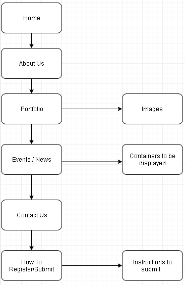

Purpose of Website
SSBC 2018 is established for the following purpose:
To quantitatively measure SSBC's website's success, metrics like Key performance indicators are used.
To know more about the indication of the general performance of the established website, you can study more on web analytics. Such examples of softwares
would be Google Analytics which can be used to analyze data such as:
Our target audience are the following who have interests in AI or machine learning:
